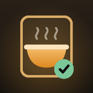

アプリ置き場
スマホのホーム画面に入れて使えます。
インストールは無料、アカウントも審査もありません。

スクショ飯
行きたい店のスクショを貯めて、行ったらチェック
トドの晩酌
回転レーンの皿を開けて、注文どおりの品を食べさせる
家計のみらい
毎月の収支から、この先の残高を1本の線にする
ブロック崩し
指でドラッグして遊ぶ、シンプルなブロック崩し
ふたりの体重帳
体重計の写真から数字を読み取って、2人分を記録する
えほんの棚
試作
絵本をめくって読む。ふりがな・読み上げつき
文庫
ハタラク文庫
試作
マーケ・事業づくりの記事置き場。Markdownで書く
☐
Someday
提案
つくる部門（アプリ・音楽）のサイト案。実績は上のアプリ
To do
合同会社To do
デモ
会社サイトの試作。事業ごとにページを分けてある
席
MTGルーム
デモ
部屋を歩いてAI担当者に話しかけ、迎えて、仕事を渡す
営業
営業AIの作業台
社内用
商談準備・リスト作り・メール下書きのプロンプトを作る